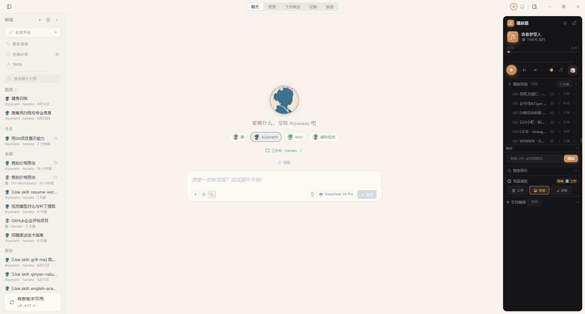
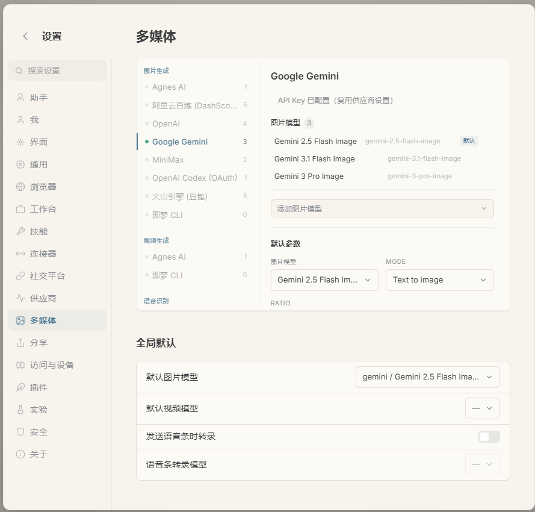

背景
长期高频使用 AI 智能体处理真实工作（简历、论文、自动化、运维），逐步沉淀出对 AI 能力边界的清晰判断：什么任务该交给 AI、什么任务需要人工界定、多 Agent 之间如何分工。在此基础上，以决策者角色设计并落地了一个可扩展、可控的个人多 Agent 协作平台。
方案
- 多 Agent 角色编排：定义多个 agent 的角色分工（决策、执行、审核、视觉辅助），设计任务编排与结果聚合机制
- 多模型混合调度：本地部署 Qwen3-8B 与云端 DeepSeek API、Gemini 视觉 API 分层调度，按任务精度与成本分配算力
- 平台能力集成：接入自动化数据管道、多通道消息通知、识图工具链，形成从采集到决策的全链路
- 方法论沉淀：把模糊需求拆解为 AI 可执行指令的规范，固化为可复用的技能体系（SKILL）
结果
- 从 0 到 1 完成平台落地，支撑简历生成、招聘监控、信息采集、论文辅助等真实任务持续运转
- 沉淀出「判断 AI 能力边界 + 精准拆解需求」的决策者方法论，并反哺为开源技能包
- 平台能力已延伸出多个独立可复用项目（详见作品集其他卡片）
界面

